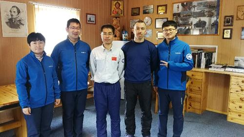
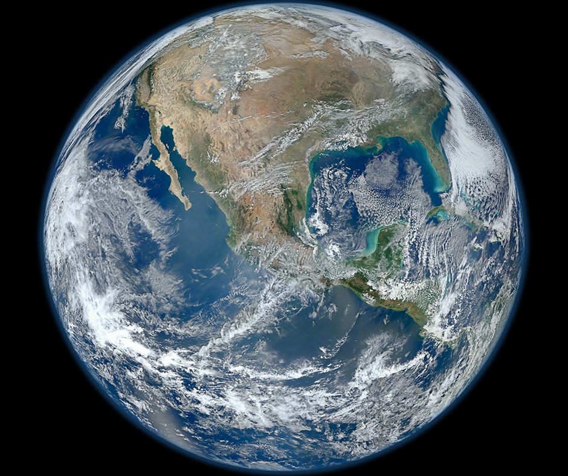
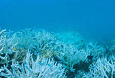
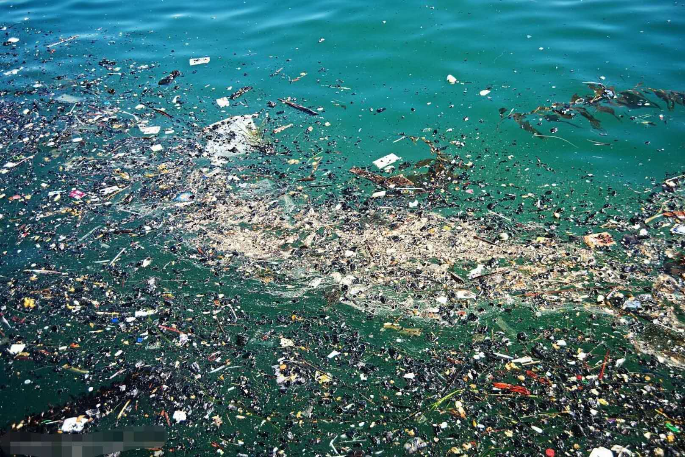
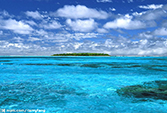

新闻中心
NEW OFFICE FURNITURE
您当前的位置: 首页 新闻中心
Location:Collections new office furniture
-

中心完成第36次南极科学考察工作任务
2020-04-07
2019年12月6日至2020年3月12日，国家海洋信息中心研究员金继业、副研究员林香红、助理研究员郭灿文作为我国第36次南极科学 考察队队员分别赴罗斯海新建站和长城站执行队次科考工作。
金继业主要承担罗斯海新建站南部航空地形测绘、周边垂直基准测量工作。新建站低温、强风雪、强紫外线... -

第51个世界地球日：珍爱地球 人与自然和谐共生
2020-04-22
4月22日是第51个世界地球日，今年的宣传主题是“珍爱地球，人与自然和谐共生”。地球有着丰富的资源资源，滋养了一代又一代人类，看似取之不尽用之不竭，实际并非如此。
-
2020海洋信息国际论坛在线举办 —— “云端”共话海洋信息科技
2020-04-20
4月10日， 主题为“心之海洋，梦之云端，共谋海洋信息发展”的2020海洋信息国际论坛通过网络视频方式举办。来自13个国家和地区的1000余名国内外学者跨越国界、跨越时差齐聚云端，进行了41场精彩纷呈的学术报告，展示了国际海洋信息领域最新研究动态和成果。
-

澳大利亚大堡礁5年内第3次出现大面积白化现象
2020-04-03
【澳大利亚大堡礁海洋公园管理局官网3月26日报道】近日，澳大利亚大堡礁海洋公园管理局发表声明称，由于气候变化导致海水温度升高，珊瑚礁内有机体大量死亡，导致大堡礁在5年内第3次发生了大面积白化现象，前两次分别发生在2016年和2017
-

"无微不至 一一海洋中的微塑料"
2020-04-02
2004年，英国普利茅斯大学的汤普森等人在《科学》杂志上发表了关于海洋水体和沉积物中塑料碎片的论文，首次提出了“微塑料”的概念，指的是直径小于5毫米的塑料碎片和颗粒
-

南海环境监测中心放射化学实验室核技术升级
2020-04-20
日前，自然资源部南海局所属的南海环境监测中心放射化学实验室核技术扩项项目竣工验收并运行，开启了南海区放射性检测与评价、核与同位素技术应用研究的新里程。
- 《
- 1
- 2
- 3
- 4
- ...
- 15
- 》